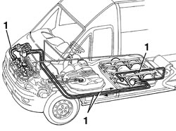
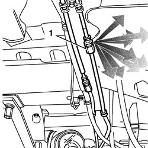

1043A04 GPL SYSTEM AND PIPES CHECK FOR LEAKS
- Path
- Procedures > 10 ENGINE UNIT > 1043 GPL TANK AND PIPES > 1043A GPL TANK > 1043A04 GPL SYSTEM AND PIPES CHECK FOR LEAKS
- Kind
- repair procedure (removal / refitting; the operation number is the code)
- Applies to
- engines: 2.0 16V; all production periods
- Interactive page
- https://sloeber94.github.io/elrnDB-fDct/en/#/244002617
Applies to: engines: 2.0 16V; all production periods
After any service operation or replacement that involves the seal fittings or the movement of pressurized parts, test for LPG leaks as follows:
Reconnect the 5A fuse F01 and the 15A fuse F03 protecting the solenoid valves and the LPG pump, disconnected when the LPG pipes were drained.
Carry out a road test by driving for 5-10 km in LPG operating mode.
Return the vehicle to the workshop and place on a lift.
1. Proceed with searching for any gas leaks using an electronic leak detector checking every single LPG system component and pipe, along the bodyshell and in the engine compartment.

Applies to: engines: 2.0 16V; all production periods
If no leaks are found using the electronic leak detector, then the vehicle has passed the test and can leave the workshop.
1. If this is not the case, locate the section of the system where the leak is coming from using the electronic detector and then spread the components with a leak detection foam (to identify the exact point of the leak).
Check the part to find the cause of the leak (loose fittings, failure to replace sealing rings, defective part) and then carry out the repair.
Repeat the road test and the procedure described to check for leaks until the problem is completely resolved.

Topics that link to this page (14)
- 1043A06 GPL TANK COMPLETE WITH SUBMERGED FUEL TANK AND VALVE UNIT R R
- 1043A30 GPL FILLER FITTING R R
- 1043A34 FILLER PIPE FROM FITTING TO GPL TANK R R
- 1043B11 RIDIG DELIVERY PIPE FROM SOLENOID VALVE TO PRESSURE FITTING/SENSOR - R.R.
- 1043B12 RIGID RETURN PIPE FROM SOLENOID VALVE TO FITTING
- 1043B13 FLEXIBLE DELIVERY PIPE FROM FITTING TO INJECTORS - R.R.
- 1043B14 FLEXIBLE RETURN PIPE FROM FITTING TO INJECTORS RIGID PIPE -R.R.
- 1043B15 INJECTORS RIGID RETURN PIPE - R.R.
- 1043B16 RIGID DELIVERY AND RETURN PIPE FROM INTERMEDIATE FITTING TO SOLENOID VALVE - R.R.
- 1043B21 INJECTORS GPL RETURN PIPE FITTING - R.R.
- 1043B22 FITTING WITH PRESSURE SENSOR ON DELIVERY PIPE TO INJECTORS - R.R.
- 1043B42 PRESSURE REGULATON FOR GPL SUPPLY COMPLETE WITH DELIVERY AND RETURN LINES FROM INTERMEDIATE CONNECTOR R R
- 1043B47 DELIVERY OR RETURN (ONE) SOLENOID VALVE - R.R.
- 1057B66 GPL INJECTOR UNIT WITH CONNECTION PIPES TO PRESSURE REGULATOR R R